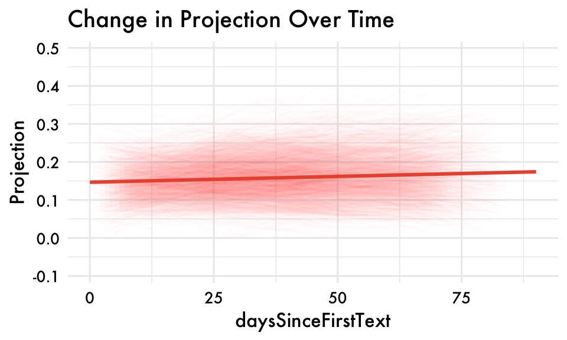
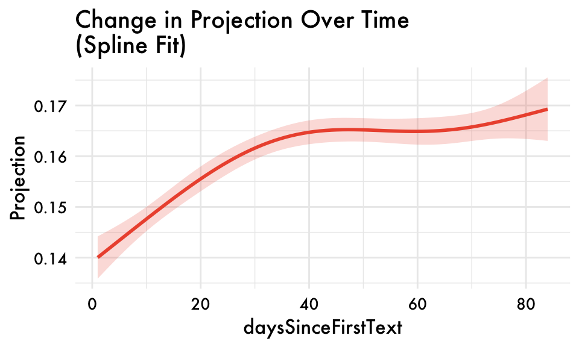
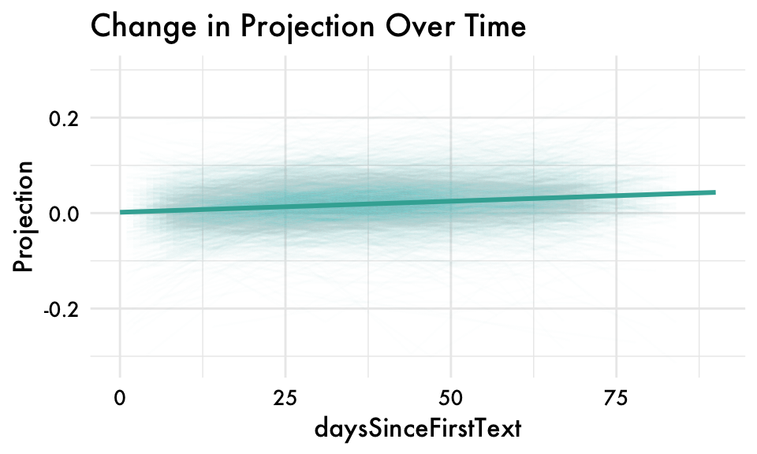
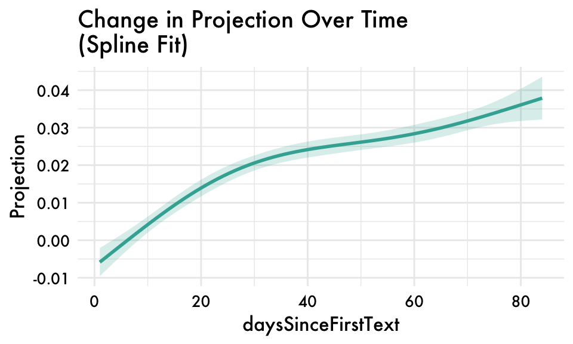
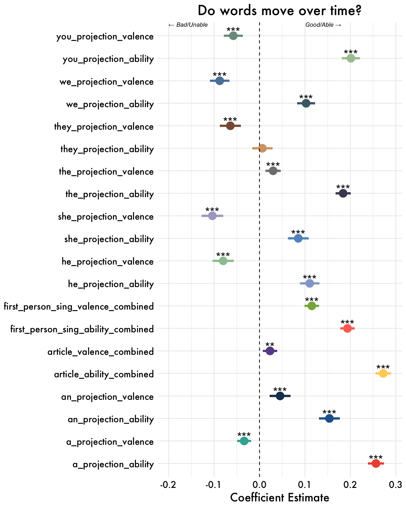
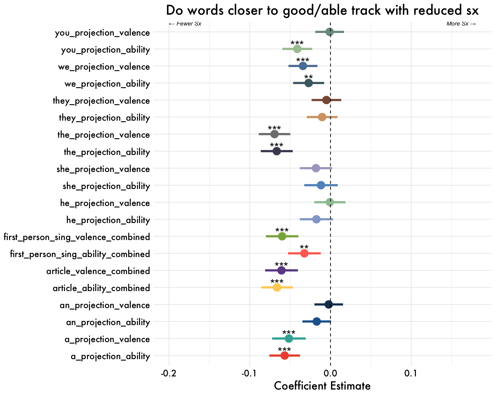
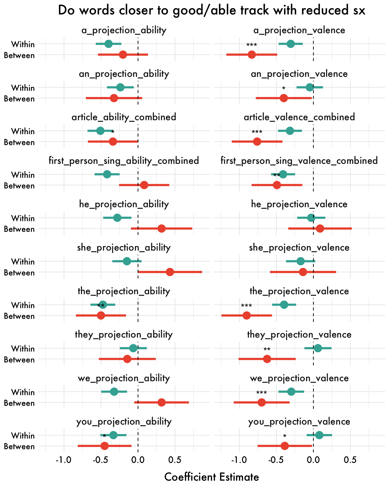

2026-02-05
Note. Data are aggregated at the assessment level and coefficients are unstandardized.First person sing. = means of I, me, myself, my, and mine projections for each participant.


Note. Data are aggregated at the assessment level and coefficients are unstandardized.First person sing. = means of I, me, and my projections for each participant.


Results are condensed to be for the first-person singular valence and ability projections only (combined).
Results are condensed to be for the first-person singular valence and ability projections only (combined).


